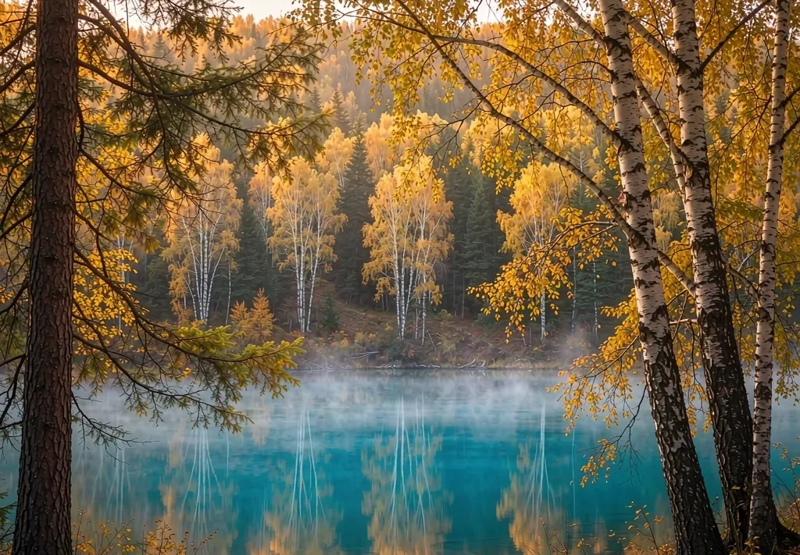

01
Arrive in Ürümqi, connect to Altay
A flight-connection day with no sightseeing, so you start the long drive rested.

11 days · Northern classics
Lakes, villages, grasslands and one seasonal road. A shorter-holiday version that still protects its slow days.

At a glance
For a first visit with roughly two weeks of leave who would rather not spend it all in a vehicle. Altay and Kanas fill the first half; Ili and the northern Duku follow, with one deliberately empty day in between.
Most days involve 2–5 hours of driving, with only two above 4.5 hours. Travelling with children or older relatives? Day 8 can swap the Duku crossing for a gentler river-valley route.
Best from June to October. The Duku and Yizhao highways open seasonally and follow the official notice for that year.
Day by day
Drive times are reference figures from a real departure and shift with road conditions and seasonal light.
A flight-connection day with no sightseeing, so you start the long drive rested.
North along the Irtysh valley; arrive in time for sunset over the river and the painted streets.
Stock up before heading into the mountains, then settle into a Tuvan log house and wait for morning mist.
Dawn at the viewing platform for chimney smoke, then on to Kanas Lake and its three bays.
One last lakeside light session before descending; evening back in Altay to regroup.
A deliberately slow day: laundry, photos, local markets, no alarm clock.
Fly into Ili and join the grassland road, where almost every bend is worth a stop.
Cross the northern Tianshan slope, moving from alpine meadow to canyon in a single day.
Back to the capital via the Dushanzi Grand Canyon, with a proper farewell dinner.
Grand Bazaar, the regional museum and coffee, paced around your flight.
Private airport transfer; luggage and tax-refund paperwork confirmed the day before.
Good to know
The whole route uses a private vehicle. The longest leg is about 5 hours on day 8 along the northern Duku; days 6 and 10 are almost entirely local and exist as recovery days. These figures come from one departure and are here to show the rhythm.
This version works best arriving in Ürümqi and using a domestic leg between Altay and Yining. Inbound travellers can connect into Ürümqi from most major hubs; we rebuild the first two days around your actual arrival point.
Add a day at Kanas, or bolt Turpan onto the end — both are straightforward adjustments.
FAQ
It is tighter than the 17-day version, but keeps two recovery days and several full-day stays. What exhausts people is consecutive long transfers, and those are deliberately spaced out.
We switch to valley and motorway links: the scenery changes but the day count does not. Every fallback is explained when the itinerary is confirmed.
Yes. We shorten driving days, add midday rests and avoid sections with larger altitude changes.
Easily — this is the most flexible part of a custom plan. Departure times, stops and overnight locations all move with the light or the bloom.
Tell us your days, party size and must-see places, and we will send an itinerary to discuss.
Get a quote